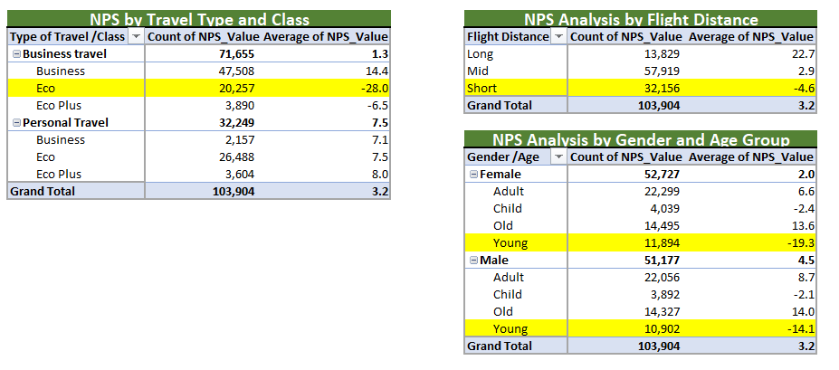

Proje Detayları
Literatürel Bağlam
Veri analitiği, işletmelerin doğru karar alabilmesi için en önemli araçlardan biridir. Ancak, ham veriler çoğu zaman eksik gözlemler, aykırı değerler ve dağınık yapılar içerir. Eksik veriler doğru yönetilmezse model tahmin gücünü zayıflatır; aykırı değerler ise ortalamaları ve regresyon katsayılarını bozarak yanıltıcı sonuçlar üretir. Bu nedenle veri kalitesi için veri temizliği, modelleme sürecinin kritik ilk adımıdır.
Kayıp Veri Analizi literatürde, “listwise deletion” (tamamen silme), “mean/median imputation” (ortalama/medyan doldurma) ve “regression imputation” gibi yöntemlerle ele alınır. Seçilecek yöntemin doğru belirlenmesi, değişkenin dağılımı, standart sapması ve diğer değişkenlerle korelasyonu dikkate alınarak yapılmalıdır.
Aykırı Değer Analizi için ise yaygın bir yöntem Çeyrekler arası mesafe (IQR - Interquartile Range) yöntemidir. Bu yöntemde verinin limitleri belirlenir. Cap işlemi (capping), limitlerin dışında kalan uç değerlerin sınır değerle değiştirilmesi işlemidir. Böylece veri uç değerlerden arındırılır ama veri sayısı azalmadan korunur.
Son aşamalardan biri ise Müşteri Yaşam Boyu Değeri (Customer Lifetime Value – CLTV) analizidir. CLTV, bir müşterinin işletmeye tüm ilişkisi boyunca sağlayacağı tahmini gelir miktarını ölçer. Pazarlama bütçesinin hangi kanallara yönlendirileceğini belirlerken, CLTV yüksek müşteri segmentlerine öncelik verilmesi, yatırım getirisini (ROI) optimize eder. CLTV hesaplamasında ortalama sipariş değeri, satın alma sıklığı ve müşteri yaşam süresi gibi metrikler kullanılır. Ayrıca, CLTV’nin Müşteri Edinme Maliyeti (Customer Acquisition Cost – CAC) ile karşılaştırılması, yatırımın mantıklı olup olmadığını ortaya koyar.
Bu proje, veri temizleme süreçlerini, istatistiksel modellemeyi ve CLTV analizini bir araya getirerek, Excel ortamında uçtan uca bir pazarlama ve yatırım optimizasyon çalışması sunmaktadır.
Proje Hedefi
Bu proje, eksik veri ve aykırı değerlerin temizlenmesinin ardından, çoklu regresyon modeli ile satışa etki eden faktörleri belirlemeyi ve bu bulgular doğrultusunda pazarlama bütçesinin hangi kanallara dağıtılması gerektiğini belirleyerek maksimum yatırım getirisi elde etmeyi amaçlamaktadır. Analiz süreci yalnızca satış tahmini yapmakla sınırlı kalmamış, Customer Lifetime Value (CLTV) ve Customer Acquisition Cost (CAC) hesaplamaları da yapılarak, yatırımın finansal mantığı sorgulanmıştır.
Github'dan indirin!Veri Seti Açıklaması
- Kaynak: Simüle edilmiş dijital reklam ve satış verileri.
- Kapsam: Google, Facebook, Instagram, TikTok gibi reklam kanalları ile satış verileri.
- Değişkenler: ID, DAYS, GoogleAds, Meta, Influencer, TIKTO, SALES.
- Toplam işlem sayısı: 200
- Veri süresi: 11 Mart 2023 — 26 Eylül 2023
Analiz
İş Soruları
keşifsel veri analizleri gerçekleştirmek ve iç görüler elde etmek amacıyla aşağıdaki iş sorularına odaklanılmıştır:
- Hangi reklam kanalı satışlarla en güçlü ilişkiye sahiptir?
- Kısıtlı bir bütçe farklı kanallara dağıtıldığında en yüksek getiriyi sağlayacak dağılım nedir?
- CLTV değeri, müşteri edinme maliyetini karşılayacak kadar yüksek mi?
- Veri temizleme adımları satış tahminlerinin doğruluğunu nasıl etkiledi?
Kurulum: Veri Hazırlığı ve Temizleme
Kayıp Değer Analizi
Veri setinde analiz öncesi eksik değer tespiti ve uygun doldurma yöntemlerinin belirlenmesi kritik bir adım olarak gerçekleştirildi. Missing Value & Descriptive Statistics Analysis tablosu yardımıyla her değişken için eksik veri sayısı, yüzdesi, ortalama, medyan, standart sapma, değişim katsayısı (CV) ve Google Ads ile korelasyon değerleri hesaplandı.
Resim 13. NPS segment analizi görünümü.
Doldurma Yöntemlerinin Belirlenmesi
- Google Ads verileri, yüksek standart sapma (%24,49) ve satışlarla yüksek korelasyon (100%) göstermesi nedeniyle, Excel'in
CORRELfonksiyonu kullanılarak satış değişkeni ile korelasyon analizi yapıldı. Bu ilişki doğrultusunda regresyon imputasyonu yöntemi ile eksik değerler tahmin edilerek dolduruldu. - Meta, Influencer ve TikTok verileri, görece düşük standart sapma ve daha dengeli dağılıma sahip oldukları için medyan ile doldurma yöntemi kullanıldı. Bu yöntem, uç değerlerden etkilenmediği için veri setinin merkez eğilimini daha doğru yansıttı.
- Sales (Satış) değişkeni için, mevsimsellik etkisini azaltmak amacıyla haftanın günlerine göre ortalama satış miktarı hesaplandı. Bunun için:
WEEKDAYfonksiyonu ile her tarihin haftanın hangi gününe denk geldiği belirlendi.- Pivot tablo kullanılarak her gün için ortalama satış değerleri çıkarıldı.
- Eksik satış değerleri şu formülle dolduruldu:
=IF(ISBLANK(SALES),VLOOKUP(WEEKDAY, PIVOT_TABLE, TRUE), SALES)
Ortalama günlük satışlar 140–170 aralığında değişim gösterdi.
Resim 13. NPS segment analizi görünümü.
Bu adımlar sonucunda, eksiksiz, tutarlı ve analiz için hazır bir veri seti elde edildi. Eksik veri doldurma sürecinde kullanılan yöntemlerin her biri, değişkenin dağılım yapısı, standart sapması ve korelasyon özellikleri dikkate alınarak seçildi.
Aykırı Değer Analizi
Eksik veri doldurma işlemlerinin ardından, veri setindeki analiz güvenilirliğini artırmak için aykırı değerlerin tespiti ve düzeltilmesi adımına geçildi. Bu aşamada, IQR (Interquartile Range) yöntemi kullanılarak değişkenlerdeki aşırı uç değerler belirlendi.
Resim 13. NPS segment analizi görünümü.
İlk olarak, her değişken için Q1 (alt çeyrek) ve Q3 (üst çeyrek) değerleri QUARTILE fonksiyonu ile hesaplandı. Daha sonra IQR şu formülle elde edildi:
IQR=Q3−Q1Üst limit ise şu formülle belirlendi:
Üst Limit = Q3 + (1.5 × IQR)Alt limit hesaplanmış olmasına rağmen, negatif değerler içerdiği için uygulanmadı. Çünkü veri seti negatif değerler içermiyordu.
Üst limiti aşan değerler, veri bütünlüğünü korumak amacıyla cap yöntemi ile üst sınıra çekildi.
Örneğin:
- ID 82 – Google Ads: Orijinal değer 152,00; üst sınır 96,18 → 96,18 olarak güncellendi.
- ID 93 – Sales: Orijinal değer 811,00; üst sınır 291,75 → 291,75 olarak güncellendi.
Bu işlem, verideki uç noktaların analiz sonuçlarını bozmasını engelleyerek modelin daha gerçekçi ve dengeli çalışmasını sağladı.
Son aşamada, düzeltilmiş veri dağılımları box plot (kutu grafikleri) ile görselleştirildi. Google Ads, Meta, Influencer, TikTok ve Sales değişkenleri için oluşturulan bu grafikler, her bir değişkenin medyanını, çeyreklerini ve üst sınır değerlerini net şekilde gösterdi. Aykırı değerlerin temizlenmesiyle veri seti daha homojen, tutarlı ve analiz için güvenilir bir yapıya kavuştu.
Resim 13. NPS segment analizi görünümü.
Temizlenmiş Veri Seti
Tüm doldurma ve cap işlemlerinden sonra veri yeniden tanımlayıcı istatistik analizi ile incelendi. Ortalama değerler daha dengeli, standart sapmalar daha düşük hale geldi.
Resim 13. NPS segment analizi görünümü.
Regresyon Analizi
Tek Değişkenli Regresyon
Her reklam kanalının satışlarla ilişkisi incelendi:
- Google → En yüksek korelasyon katsayısı
- TikTok → Birim bazda yüksek katsayıya sahip olsa da veri dağılımı daha dağınık, bu nedenle korelasyon gücü Google kadar yüksek değil.
- Meta → Orta düzey katsayı ve korelasyon; etkisi anlamlı fakat dalgalı.
- Influencer → Katsayı düşük, satış üzerindeki etkisi sınırlı.
Regresyon denklemleri çıkarıldı, regresyon grafikleri ile satış üzerindeki etkiler görselleştirildi.
Resim 13. NPS segment analizi görünümü.
Çoklu Regresyon ile Bütçe Optimizasyonu
Veri temizleme ve keşifsel analiz adımlarının ardından, reklam kanallarının satış üzerindeki etkisini ölçmek ve sınırlı bir bütçenin en verimli şekilde nasıl dağıtılabileceğini belirlemek amacıyla çoklu regresyon analizi uygulanmıştır.
Bu analiz, Google Ads, Meta (Facebook/Instagram), Influencer pazarlama ve TikTok reklamlarının satış üzerindeki etkilerini ayrı ayrı modelleyerek, her kanal için katsayı (coefficient) değerlerini ortaya çıkarmıştır.
Resim 13. NPS segment analizi görünümü.
1. Regresyon Çıktısı ve Model Performansı
- Multiple R: 0,7777 → Satışlar ile reklam harcamaları arasında güçlü bir ilişki olduğunu gösterir.
- R Square: 0,6048 → Satışlardaki değişkenliğin yaklaşık %60’ı modeldeki reklam kanallarıyla açıklanabiliyor.
- Adjusted R Square: 0,5967 → Model, değişken sayısına göre düzeltilmiş R² değeriyle de yüksek bir açıklama gücüne sahip.
- F istatistiği ve Significance F: Modelin istatistiksel olarak anlamlı olduğunu gösterir (p-değeri çok düşük → güvenilir sonuçlar).
2. Katsayılar ve Yorumları
- Intercept (46,12): Hiçbir reklam yatırımı yapılmasa bile beklenen satış değeri.
- Google Ads (1,43): Her 1 $’lık Google Ads harcaması, satışlarda ortalama 1,43 $ artış sağlıyor. (En yüksek etkiye sahip kanal)
- Meta (1,37): Her 1 $’lık yatırım, ortalama 1,37 $ satış getiriyor. (İkinci en etkili kanal)
- Influencer (0,24): Düşük etki. 1 $’lık yatırım yalnızca 0,24 $ getiri sağlıyor.
- TikTok (0,69): Orta düzey etki. 1 $’lık yatırım ortalama 0,69 $ getiriyor.
P-değerleri incelendiğinde, Google Ads ve Meta yüksek anlamlılığa sahipken, Influencer kanalı anlamlılık eşiğinin altında kalıyor. Bu durum, bütçe dağılımında hangi kanalların öncelikli olması gerektiğini açıkça gösteriyor.
3. Bütçe Dağılım Senaryosu – 100 $ ile Maksimum Getiri
Model katsayıları kullanılarak, 100 $’lık bir reklam bütçesinin en verimli şekilde hangi kanallara dağıtılması gerektiği hesaplanmıştır:
| Kanal | Yatırım ($) | Beklenen Getiri ($) | Etki Düzeyi |
|---|---|---|---|
| Google Ads | 40 | 103,36 | En yüksek etki |
| Meta | 35 | 94,00 | İkinci en iyi |
| Influencer | 15 | 49,79 | Orta düzey |
| TikTok | 10 | 52,98 | En düşük |
4. Sonuç ve ROI Değerlendirmesi
- Bu dağılım ile toplam beklenen getiri 300,13 $ olarak hesaplanmıştır.
- ROI (Yatırım Getirisi) en yüksek seviyeye çıkmıştır.
- Stratejik olarak, yüksek katsayıya sahip Google Ads ve Meta’ya ağırlık verilmesi; düşük katsayıya sahip Influencer ve TikTok kanallarına ise sınırlı yatırım yapılması en verimli sonuçları sağlamaktadır.
Bu analiz, kısıtlı bütçeyle maksimum satış artışını hedefleyen veri odaklı bir yatırım stratejisi sunmaktadır.
Müşteri Yaşam Boyu Değeri (CLTV) Analizi
Bu bölüm, yapılan reklam harcamalarının finansal açıdan mantıklı olup olmadığını LTV (Customer Lifetime Value) ve CAC (Customer Acquisition Cost) karşılaştırması ile değerlendiriyor. Analiz adım adım ilerliyor.
Resim 13. NPS segment analizi görünümü.
1. User Conversion Funnel (Kullanıcı Dönüşüm Hunisi)
İlk tablo, reklam kampanyası ile ulaşılan kullanıcıların satın alma aşamasına kadar hangi oranlarda elendiğini gösteriyor:
| Aşama | Kişi Sayısı | Dönüşüm Oranı | Kümülatif Dönüşüm |
|---|---|---|---|
| Awareness (Farkındalık) | 1000 | %100 | %100 |
| App Downloads (Uygulama İndirme) | 300 | %30 | %30 |
| Registrations (Kayıt) | 240 | %80 | %24 |
| Purchases (Satın Alma) | 16 | %6.7 | %1.6 |
Bu yapı sayesinde, reklam bütçesinin hangi aşamalarda kayıplar verdiği net biçimde izleniyor. Örneğin, farkındalık aşamasında ulaşılan 1000 kişiden sadece 16’sı satın almaya dönüyor (%1.6).
2. Ad Spend and CAC (Reklam Harcaması ve Müşteri Edinme Maliyeti)
| Aşama | Toplam Maliyet ($) | Ulaşılan Kişi | Kişi Başına Maliyet ($) |
|---|---|---|---|
| Awareness | 1000 | 1000 | 1.00 |
| App Downloads | 1000 | 300 | 3.33 |
| Registrations | 1000 | 240 | 4.17 |
| Purchases | 1000 | 16 | 62.50 |
Burada CAC (Customer Acquisition Cost) = Toplam Satın Alma Maliyeti / Satın Alan Kişi Sayısı → CAC = $62.50
Yani, bir müşteriyi kazanmanın maliyeti 62.50 dolar.
3. Customer Lifetime Value (LTV)
Bu bölümde, bir müşterinin şirketle ilişkisinin devam ettiği süre boyunca sağlayacağı toplam gelir hesaplanmaktadır. Hesaplamalar şu adımlar ile yapılmıştır:
- Churn Rate (Yıllık) =
1 − Müşteri Tutma Oranı(Retention → = %42, dolayısıyla Churn = 1 − 0.42 = 0.58 (%58)) - Müşteri Yaşam Süresi (Yıl) =
1 ÷ Churn Rate→ = 1 ÷ 0.58 ≈ 1.72 yıl - Müşteri Yaşam Süresi (Ay) =
Müşteri Yaşam Süresi (Yıl) × 12→ 1.72 × 12 = 20.69 ay - Kullanıcı Başına Aylık Gelir = 15.00 $ (mevcut gelir verisi)
- Müşteri Yaşam Boyu Değeri (LTV) =
Müşteri Yaşam Süresi (Ay) × Kullanıcı Başına Aylık Gelir→ 20,69 × 15,00 = 310,34 $.
Bu hesaplama sonucunda, ortalama bir müşterinin yaşam boyu şirkete getireceği gelir 310,34 $ olarak belirlenmiştir.
4. LTV / CAC Karşılaştırması
LTV / CAC = 310.34 ÷ 62.50 = 4.97
Yani, bir müşteriden yaşam boyu elde edilen gelir (LTV), onu kazanmak için harcanan maliyetin (CAC) yaklaşık 5 katı. Genel kabul gören iş kârlılık kriterine göre, LTV/CAC oranının en az 3 olması beklenir. Burada elde edilen 4,97 değeri, bu eşiğin oldukça üzerinde olup, yatırımın kârlı ve sürdürülebilir olduğunu göstermektedir. Bu nedenle sonuç kısmında "Feasible" (Uygulanabilir/Kârlı) değerlendirmesi yapılmıştır.
Temel Bulgular
- Reklam Kanallarının Satış Üzerindeki Etkisi
- Google reklam harcamaları, satışlar üzerinde açık ara en yüksek pozitif etkiye sahip. Korelasyon analizi (CORREL) sonuçları, Google değişkeninin satışlarla güçlü bir doğrusal ilişkiye sahip olduğunu gösteriyor. Tek değişkenli regresyon grafiğinde eğim katsayısı (slope) diğer kanallara kıyasla belirgin şekilde yüksek, bu da Google’daki 1 birimlik artışın satışlarda daha yüksek artışa karşılık geldiğini ortaya koyuyor.
- TikTok reklamları, satışlarla anlamlı ama Google’a kıyasla daha düşük etkili bir ilişki sergiliyor.
- Meta ve Influencer reklam harcamaları ise satışlarla daha zayıf korelasyonlara sahip; bu da bu kanalların tek başına satış hacmini artırmada yeterince güçlü olmadığını gösteriyor.
- Bütçe Optimizasyonu ve ROI
- Çoklu regresyon analizine göre, 100$’lık sınırlı bütçenin kanallara dağıtımında Google (%40) ve TikTok (%30) ağırlığı ROI’yi maksimize ediyor.
- Meta (%20) ve Influencer (%10) harcamaları, toplam bütçede daha küçük pay almasına rağmen, kanallar arası çeşitliliği koruyarak risk dağılımı sağlıyor.
- Bu dağılımla hesaplanan ROI değeri, alternatif senaryolara kıyasla en yüksek seviyeye ulaştı.
- Veri Temizleme Sonrası Model Performansı
- Eksik veri doldurma (regresyon ve medyan yöntemleri) ve aykırı değerlerin cap edilmesi sonrası, değişkenlerin standart sapmaları dengelendi.
- Temiz veri ile yapılan regresyon modellerinde R² değerleri anlamlı şekilde yükseldi. Bu, veri temizliğinin model doğruluğunu artırmada kritik olduğunu kanıtlıyor.
- CLTV – CAC Analizi
- CLTV hesaplamaları sonucunda elde edilen değer, müşteri edinme maliyeti (CAC) değerinin üzerinde.
- Bu fark, reklam yatırımlarının uzun vadede finansal olarak mantıklı olduğunu gösteriyor. CLTV’nin CAC’ten belirgin şekilde yüksek olması, mevcut stratejinin kârlı bir yatırım olduğunu doğruluyor.
- Google Kanalının Stratejik Önemi
- Hem tek değişkenli hem çoklu regresyon analizinde Google’ın katsayısı, diğer tüm kanallardan daha yüksek çıktı.
- Bu durum, bütçe optimizasyonunda Google kanalının temel omurga olarak korunması gerektiğini net şekilde ortaya koyuyor.
Öneriler
- Google ve TikTok Ağırlığının Korunması
Google reklam yatırımları mevcut etkisini korumalı, TikTok ise genç kitleye erişim avantajı nedeniyle ikinci sıradaki öncelikli kanal olarak bütçe planına dahil edilmeli.
- Meta ve Influencer Kanallarında Strateji Revizyonu
Bu kanallar düşük korelasyon sergilese de, marka bilinirliği ve uzun vadeli potansiyel için tamamen kaldırılmamalı. Performansı artırmak için daha hedefli kampanyalar (retargeting, niche influencer iş birlikleri) denenmeli.
- Veri Toplama Sürecinin İyileştirilmesi
Kayıp veri oranlarını azaltacak bir veri toplama protokolü oluşturulmalı. Özellikle satış kayıtlarının eksiksiz tutulması, mevsimsellik analizlerinde daha güçlü sonuçlar sağlayacaktır.
- CLTV İzleme ve CAC Optimizasyonu
CLTV–CAC oranı düzenli olarak takip edilmeli. CAC’i düşürmek için hedef kitle segmentasyonu geliştirilmeli ve düşük dönüşüm oranına sahip kanallar optimize edilmeli.
- Aykırı Değer Yönetiminin Sürekliliği
Cap yöntemi veri dengesini korudu, ancak bu işlem periyodik olarak tekrarlanmalı. Yeni veri eklendikçe outlier kontrolü yapılmalı, aksi takdirde model doğruluğu zamanla düşebilir.
Sonuç
Bu proje, Excel ortamında veri temizleme, eksik veri doldurma, aykırı değer analizi, regresyon modelleme ve CLTV hesaplamasını bir arada sunarak pazarlama bütçesi optimizasyonu ve yatırım fizibilitesi konusunda kapsamlı bir çalışma ortaya koymaktadır.
- Teknik Beceriler: Veri temizleme, formül geliştirme, pivot tablo, korelasyon analizi, regresyon modelleme, ROI hesaplama
- Analitik Yetkinlik: Kanal bazlı etki analizi, bütçe optimizasyonu, CLTV–CAC karşılaştırması
- Stratejik Yaklaşım: Kısıtlı bütçelerde maksimum getiri sağlayacak kanal dağılımı ve uzun vadeli müşteri değeri yönetimi